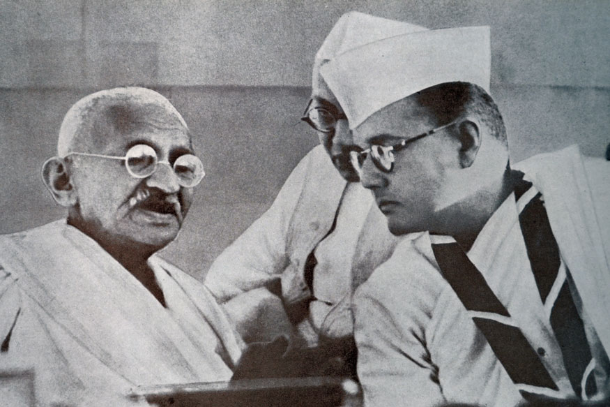
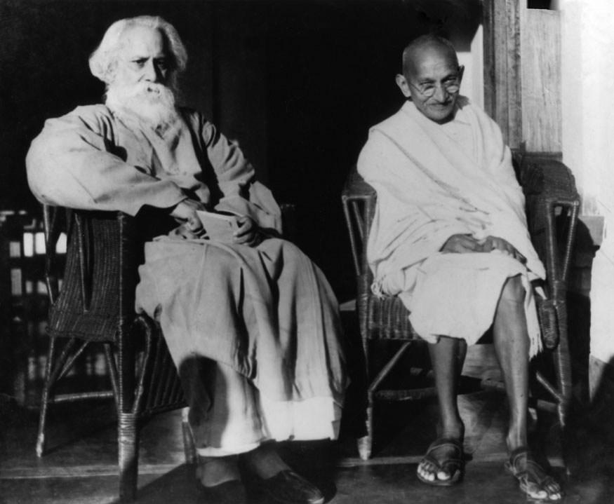

Mahatma Gandhi
"My life is my message"
Man of the millenium


Timeline of Mahatma Gandhi's Life:
- 1883: ·Gandhi and Kasturbai are married.
- 1885: ·Death of Karamchand Gandhi, Gandhi's father
- September 4, 1888: ·Gandhi leaves for England to study law.
- June 10, 1891: ·Gandhi passes the bar exam in England.
- 1891-1893: ·Gandhi fails as a lawyer in India.
- April 1893: ·Gandhi accepts commission to spend a year in South Africa advising on a lawsuit.
- Spring 1894: ·Gandhi elects to stay on South Africa, and founds the Natal Indian Congress.
- Spring 1896: ·Gandhi returns to India to collect his wife and children.
- December 1896: ·Gandhi returns to South Africa with his family.
- October 1899: ·Outbreak of Boer War (1899-1901) in South Africa. Gandhi organizes an ambulance corps for the British.
- 1901: ·Gandhi returns to India to attend the Indian National Congress. G.K. Gokhale introduces him to nationalist leaders.
- 1901-1906: ·Gandhi struggles toward Brahmacharya, or celibacy, finally ending his sexual activity in 1906.
- 1904: ·Nationalists found the magazine the Indian Opinion, and soon print it on Gandhi's farm, the "Phoenix Settlement."
- July 31, 1907: ·The Boer Republic Transvaal, now under the control of the British, attempts to register all Indians as members; Gandhi and others refuse to register. Their resistance efforts mark the first use of nonviolent non-cooperation
by the Indian minority in South Africa, soon calledsatyagraha, or "soul-force."
- January 11, 1908: ·Gandhi is arrested and sentenced to two months in prison.
- October 10, 1908: ·Gandhi is arrested again, spends a month in jail.
- 1909: ·Gandhi travels to London, pushing for rights of South African Indians. The Transvaal registration law is repealed.
- November 13, 1913: ·Indians in Natal and Transvaal, under Gandhi's leadership, march peacefully in protest of a racist poll tax and marriage laws. The marches continue through the winter.
- June 30, 1914: ·Gandhi and Smuts, the Prime Minister of the Transvaal, reach an agreement, ending the protests.
- July 18, 1914: ·Gandhi sails to England.
- August 1914: ·Gandhi arrives in England, just at the outbreak of World War I(1914-1918).
- January 9, 1915: ·Gandhi returns home to India, and receives a hero's welcome.
- May 25, 1915: ·Gandhi and his followers found Satyagraha ashram, the religiously-oriented communal farm where Gandhi, his family, and his followers will live.
- April 6, 1919: ·Nationalists hold a hartal, or day of fasting and prayer, in protest of the Rowlatt Act, which drastically curtails civil liberties in India.
- April 13, 1919: ·Amritsar Massacre; Under General Dyer, British troops slaughter Indian protesters.
- August 1, 1920: ·Gandhi calls for a period of non-cooperation across India.
- March 10, 1922: ·Gandhi is arrested for sedition.
- March 1922-January 1924: ·Gandhi remains in prison.
- 1924-1928: ·Gandhi avoids politics, focusing his writings on the improvement of India.
- 1925: ·Despite his long absence from politics, Gandhi becomes President of the Indian National Congress.
- February-August 1928: ·Residents in the district of Bardoli protest high rents using methods of non-cooperation inspired by Gandhi.
- January 26, 1930: ·Gandhi publishes the Declaration of Independence of India.
- March 2, 1931: ·Gandhi warns the Viceroy of his intention to break the Salt Laws.
- March 12-April 6, 1931: ·Gandhi leads his Salt March to the sea.
- May 5, 1931: ·Gandhi is arrested for violating the Salt Laws; non-cooperation movements break out across India.
- January 1931: ·British government yields to protests, releases all prisoners, invites a Congress representative to Britain for a Round Table Conference (the Congress asks Gandhi to be this representative).
- Autumn 1931: ·Gandhi participates in the Round Table Conference in Britain.
- December 28, 1931: ·Gandhi returns to India.
- January 4, 1932: ·Gandhi is arrested for sedition, and held without a trial.
- September 20-25, 1932: ·Gandhi fasts in prison to protest the treatment of untouchables.
- 1934-38: ·Gandhi avoids politics, travels in rural India.
- 1935: ·Government of India Act passes British Parliament and is implemented in India; it is the first movement toward independence.
- September 1939: ·World War II begins, lasting until 1945.
- March 22, 1942: ·Sir Stafford Cripps arrives in India, presenting to the Indian National Congress a proposal for Dominion status (autonomy within the British Commonwealth) after the War.
- August 8, 1942: ·The Indian National Congress rejects the Cripps proposal, and declares it will grant its support for the British war effort only in return for independence.
- August 1942: ·Congress leaders are arrested; Gandhi is imprisoned in the Aga Khan's palace.
- February 10 To March 2, 1943: ·Gandhi fasts while imprisoned, to protest British rule.
- February 22, 1944: ·Death of Kasturbai
- May 6, 1944: ·Gandhi is released from the Aga Khan's palace.
- Summer 1944: ·Gandhi visits Muhammed Ali Jinnah in Bombay, but is unable to work out an agreement that will keep India whole.
- May 16, 1946: ·British Cabinet Mission publishes proposal for an Indian state, without partition; Jinnah and the Muslim League reject the proposal.
- March 1947: ·Lord Mountbatten arrives in India and hammers out agreement for independence and partition.
- August 15, 1947: ·Indian independence becomes official, as does the partition into two countries, India and Pakistan.
- August-December 1948: ·India dissolves into chaos and killings, as Hindus and Muslims flee for the borders of India and Pakistan.
- January 30, 1948: ·Gandhi is assassinated by Nathuram Vinayuk Godse, a Hindu nationalist.
Learn more about Gandhi on wikipedia